Imbuing（練成スキル） ： 材料
１．魔法素材
- 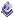 ： relic fragment [レリックの破片] --- 抽出評価値451％以上のマジックアイテムから抽出される。練成スキル95.1（ガーゴイルは90.1）以上必要。
 ： enchanted essence [魔力化エキス] --- 抽出評価値200％以上のマジックアイテムから抽出される。練成スキル50.1（ガーゴイルは45.1）以上必要。
： enchanted essence [魔力化エキス] --- 抽出評価値200％以上のマジックアイテムから抽出される。練成スキル50.1（ガーゴイルは45.1）以上必要。 ： magical residue [魔法の残骸] --- 抽出評価値200％未満のマジックアイテムから抽出される。スキルに制限はない。
： magical residue [魔法の残骸] --- 抽出評価値200％未満のマジックアイテムから抽出される。スキルに制限はない。
２．一般宝石
一般宝石は、NPCから購入するか"mining for quality gems"を読んだキャラクターが宝石を採掘する設定で採掘をして入手します。
 ： amber [琥珀]
： amber [琥珀] ： amethyst [アメジスト]
： amethyst [アメジスト] ： citrine [シトリン]
： citrine [シトリン] ： diamond [ダイヤモンド]
： diamond [ダイヤモンド] ： emerald [エメラルド]
： emerald [エメラルド] ： ruby [ルビー]
： ruby [ルビー] ： star sapphire [スターサファイア]
： star sapphire [スターサファイア] ： sapphire [サファイア]
： sapphire [サファイア] ： tourmaline [トルマリン]
： tourmaline [トルマリン]
３．希少材料
希少素材は採掘、伐採および釣りで入手するもの、TerMur・地底・Stygian Abyssに棲む生物から入手するものを確認しています。
また、Publish61で一部の希少材料が生産系スキルで作成できるようになります。
 ： turquoise [ターコイズ] --- 採掘
： turquoise [ターコイズ] --- 採掘 ： ecru citrine [エクルーシトリン] --- 採掘
： ecru citrine [エクルーシトリン] --- 採掘 ： blue diamond [ブルーダイヤ] --- 採掘
： blue diamond [ブルーダイヤ] --- 採掘 ： perfect emerald [完璧なエメラルド] --- 採掘
： perfect emerald [完璧なエメラルド] --- 採掘 ： fireruby [ファイアルビー] --- 採掘
： fireruby [ファイアルビー] --- 採掘 ： dark sapphire [ダークサファイア] --- 採掘
： dark sapphire [ダークサファイア] --- 採掘 ： white pearl [白真珠] --- 釣り
： white pearl [白真珠] --- 釣り ： brilliant amber [輝琥珀] --- 伐採
： brilliant amber [輝琥珀] --- 伐採 ： parasitic plant --- 伐採
： parasitic plant --- 伐採 ： luminescent fungi --- 伐採
： luminescent fungi --- 伐採 ： boura pelt [ボウラの毛皮] --- boura (lowland, ruddy, high plains) の戦利品として入手。
： boura pelt [ボウラの毛皮] --- boura (lowland, ruddy, high plains) の戦利品として入手。 ： slith tongue [slithの舌] --- slith (normal, stone, toxic) の戦利品として入手。
： slith tongue [slithの舌] --- slith (normal, stone, toxic) の戦利品として入手。 ： raptor teeth [raptorの歯] --- raptorの戦利品として入手。
： raptor teeth [raptorの歯] --- raptorの戦利品として入手。 ： silver snake skin [シルバースネークの皮] --- 諸王の墳墓に棲むsilver serpentの戦利品として入手。
： silver snake skin [シルバースネークの皮] --- 諸王の墳墓に棲むsilver serpentの戦利品として入手。 ： undying flesh [不死の肉塊] --- undead guardian (normal, putrid)の戦利品として入手。
： undying flesh [不死の肉塊] --- undead guardian (normal, putrid)の戦利品として入手。 ： goblin blood [goblinの血] --- goblin系生物の戦利品として入手。
： goblin blood [goblinの血] --- goblin系生物の戦利品として入手。 ： vial of vitriol [硫酸の小瓶] --- acid slugの戦利品として入手。錬金スキル
： vial of vitriol [硫酸の小瓶] --- acid slugの戦利品として入手。錬金スキル- 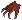 ： daemon claw [デーモンの爪] --- fire daemonの戦利品として入手。
 ： spider carapace [クモの甲殻] --- trapdoor spiderの戦利品として入手。
： spider carapace [クモの甲殻] --- trapdoor spiderの戦利品として入手。 ： lava serpent crust [lava serpentの表皮] --- lava elementalの戦利品として入手。
： lava serpent crust [lava serpentの表皮] --- lava elementalの戦利品として入手。- 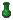 ： vial of ichor [イコルの瓶] --- wolf spider, trapdoor spiderの戦利品として入手。錬金スキル
 ： reflective wolf eye [光る狼の眼] --- clan scratch savage wolfの戦利品として入手。
： reflective wolf eye [光る狼の眼] --- clan scratch savage wolfの戦利品として入手。 ： faery dust [妖精の粉] --- fairy dragon, wispおよびpixieの戦利品として入手。
： faery dust [妖精の粉] --- fairy dragon, wispおよびpixieの戦利品として入手。- 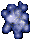 ： essence of control [統制のエッセンス] --- Stygian Abyssに棲む生物の戦利品として入手。区域限定（以下同じ）。
- 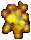 ： essence of passion 情熱のエッセンス]
 ： essence of diligence [勤勉のエッセンス]
： essence of diligence [勤勉のエッセンス] ： essence of direction [目標のエッセンス]
： essence of direction [目標のエッセンス]- ： essence of feeling [感情のエッセンス]
 ： essence of balance [均衡のエッセンス]
： essence of balance [均衡のエッセンス]- 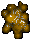 ： essence of achievement [達成のエッセンス]
 ： essence of precision [正確のエッセンス]
： essence of precision [正確のエッセンス] ： essence of order [秩序のエッセンス]
： essence of order [秩序のエッセンス] ： essence of singularity [単一のエッセンス]
： essence of singularity [単一のエッセンス]- 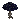 ： chaga mushroom [チャーガ茸] --- 諸王の墳墓、大広間〜Abyssへの道中で生えているのを確認できる。
- 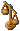 ： delicate scales [精密天秤] --- 均衡エリアのRatmanモンスターから戦利品として入手。釣りでアイテム釣り上げ時に低確率
 ： abyssal cloth [アビス布] --- 均衡エリアのRatmanモンスターから戦利品として入手。裁縫スキル
： abyssal cloth [アビス布] --- 均衡エリアのRatmanモンスターから戦利品として入手。裁縫スキル- 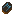 ： arcanic rune stone [アーケインルーン] --- 均衡エリアのRatmanモンスターから戦利品として入手。細工スキル
 ： powdered iron [鉄粉] --- 均衡エリアのRatmanモンスターから戦利品として入手。鍛冶スキル
： powdered iron [鉄粉] --- 均衡エリアのRatmanモンスターから戦利品として入手。鍛冶スキル- 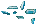 ： crystal shards [クリスタル片] --- 均衡エリアのRatmanモンスターから戦利品として入手。TerMurでの伐採時に低確率
- 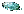 ： crushed glass [割れたガラス] --- 均衡エリアのRatmanモンスターから戦利品として入手。鍛冶スキル
 ： seed of renewal [復活の種] --- 均衡エリアのRatmanモンスターから戦利品として入手。ガーデニングの種採取時に低確率
： seed of renewal [復活の種] --- 均衡エリアのRatmanモンスターから戦利品として入手。ガーデニングの種採取時に低確率 ： elven fletching [エルフの矢羽] --- 均衡エリアのRatmanモンスターから戦利品として入手。弓工スキル
： elven fletching [エルフの矢羽] --- 均衡エリアのRatmanモンスターから戦利品として入手。弓工スキル ： crystalline blackrock [ブラックロック結晶] --- 均衡エリアのRatmanモンスターから戦利品として入手。鉱石エレメンタルの戦利品（低確率）
： crystalline blackrock [ブラックロック結晶] --- 均衡エリアのRatmanモンスターから戦利品として入手。鉱石エレメンタルの戦利品（低確率） ： void orb [虚無のオーブ] --- Ter Murに棲むVoidモンスターの戦利品として入手。細工スキル
： void orb [虚無のオーブ] --- Ter Murに棲むVoidモンスターの戦利品として入手。細工スキル
各種エッセンスは、画像付近に出現するモンスターから入手できます。